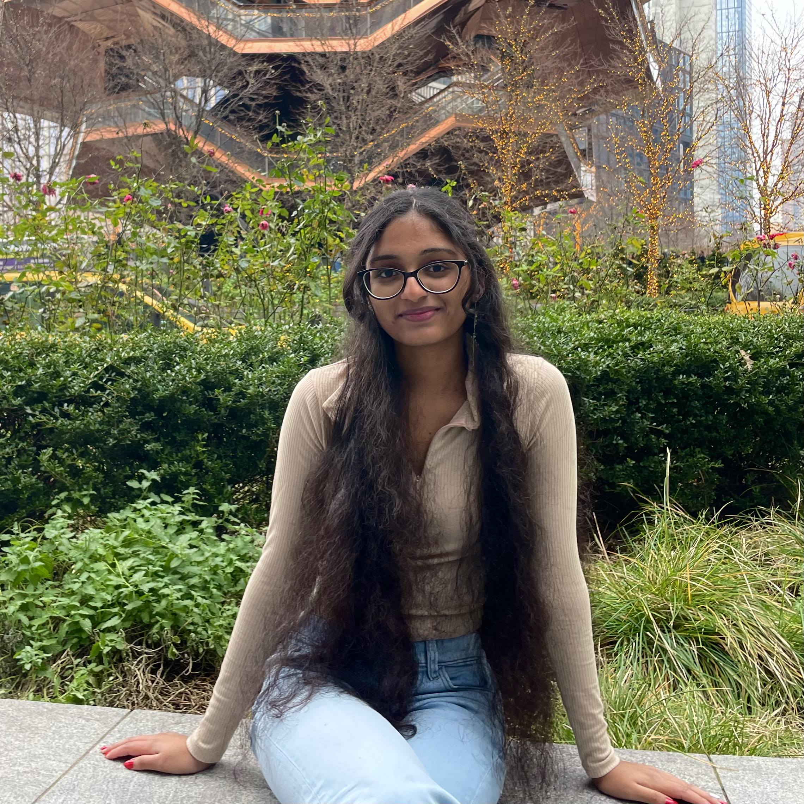

▽
I am an honors student at the University of Massachusetts Amherst, pursuing a major in Computer Science with a minor in Mathematics. I have strong interests in computational fields, including AI and machine learning, and aim to leverage my skills in critical thinking, problem-solving, and communication to make meaningful contributions to the tech industry.
Currently interning at the UMass IT Salesforce team. Completed numerous trailheads to get familiar with Salesforce. Maintained contacts database by cleaning up duplicates. Responded to online tickets from staff and faculty. Worked with the team to shadow and provide support on different ongoing projects, specifically in FormAssembly to deploy forms used by thousands of UMass students.
Improved SPIRE site reliability with rigorous manual testing after new patch releases. Updated IT KnowledgeBase with new documentation for clearer support on different SPIRE services. Created video support using Camtasia and Audacity for additional training and support
Working during fall and spring only. Provided in-person technical assistance to students, faculty, and alumni at UMass Amherst. Responded to and manage online tickets on ServiceNow with the creation of 270+ tickets and resolving many more.Provided live online support to clients through Bomgar.
Took an 8-week summer course at MIT about ML foundations, and building, training, and implementing ML models. Engaged in an year-long project during the fall and spring semesters to collaboratively work with large-scale, real-world datasets to train, test, and evaluate a machine learning model for a matched company.
Built 5+ AI apps and APIs using NextJS, OpenAI, Pinecone, StripeAPI with 98% accuracy as seen by 1000 users. Coached by Amazon, Bloomberg, and Capital One engineers on Agile, CI/CD, Git, and microservice patterns.
A customizable to-do list website that allows users to add, delete, search, and prioritize their tasks.
Used the World Happiness Report dataset to predict countries' happiness scores based on their socioeconomic factors through a Random Forest ML model. Link to be added after completion.